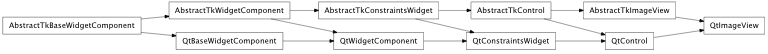
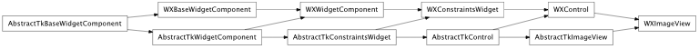

Bases: enaml.components.control.Control
A simple viewer for instances of AbstractTkImage.
A Pixmap instance containing the image to display.
Whether or not to scale the image with the size of the component.
An image view hugs its width weakly by default.
An image view hugs its height weakly by default.
Overridden parent class trait
alias of __NoInterface__

Bases: enaml.backends.qt.qt_control.QtControl, enaml.components.image_view.AbstractTkImageView
A Qt4 implementation of ImageView.
The change handler for the ‘image’ attribute on the shell component.

Bases: enaml.backends.wx.wx_control.WXControl, enaml.components.image_view.AbstractTkImageView
A Wx implementation of ImageView.
The change handler for the ‘image’ attribute on the shell component.